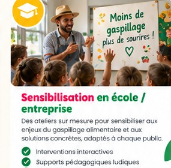
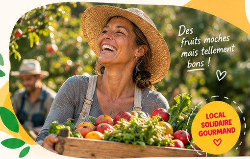

Nos solutions
 Local
LocalPaniers anti-gaspi
Des paniers de fruits et légumes locaux, de saison et à prix doux.
Découvrir →
FlexibleFormules
Des offres pour particuliers, familles, associations et entreprises.
Voir les formules →Nous donnons une seconde vie aux fruits et légumes invendus, en soutenant les producteurs locaux et en régalant nos territoires.
Découvrir nos solutions →
Nous récupérons les fruits et légumes invendus auprès des producteurs locaux.
Nous trions et sélectionnons les produits encore parfaitement consommables.
Nous rendons ces produits accessibles via nos paniers et nos partenaires.
Nous transformons les invendus en délicieuses recettes et produits gourmands.
LocalDes paniers de fruits et légumes locaux, de saison et à prix doux.
Découvrir →
FlexibleDes offres pour particuliers, familles, associations et entreprises.
Voir les formules →
Producteurs, commerces, associations et collectivités : nous avançons ensemble pour des territoires plus solidaires.
Découvrir nos partenaires →Une nouvelle collaboration locale pour sauver encore plus de fruits et légumes.
Lire l'article →
Petits et grands transforment les fruits invendus en recettes gourmandes.
Lire l'article →
Rencontres, échanges et sensibilisation autour de l'alimentation locale.
Lire l'article →